ViSiOMlab — Benchmark Report
1. Saccades · 182.9s · 9877e87-dirty.ed37ec6 · 2026-06-25 07:24 ⚠ out of date — code now 9877e87-dirty.48acb6f
Saccade kinematics and internal signal cascade. Tests main sequence (amplitude–velocity), oblique trajectory linearity, double-step refractoriness, and the full Robinson cascade. The cascade figure also shows the cerebellar saccadic-suppression gates (pre- and post-delay), the pre- vs post-cascade slip + efference-copy comparison (cerebellum EC matched to the retinal cascade incl. the two-stage MN / MLF forward model), and the pursuit / VS / T-VOR drives during a saccade.
Saccade Main Sequence

| measure | value | band | golden | drift | |
|---|---|---|---|---|---|
| PASS | Peak velocity of a 20° saccade (main-sequence saturation) | 626.1 deg/s | [550, 750] [1] | 626.1 | +0.0% |
| PASS | Max fractional deviation from 700(1−e^−A/7), amplitudes ≥5° (the idealized curve over-predicts small saccades, so ~20% at 5° is expected) | 0.2067 | [−∞, 0.25] [1] | 0.2067 | +0.0% |
| PASS | Mean primary-saccade amplitude / target amplitude (≥5°) | 0.9758 | [0.8, 1.05] [2] | 0.9758 | +0.0% |
What this shows
Top: peak-velocity and duration main sequences (scatter + reference curves) vs amplitude. Bottom: eye position and velocity traces aligned to the target step, for amplitudes 0.5–20°. Peak velocity within ±20% of 700(1−e^{−A/7}) (≈660 deg/s at 20°); duration grows roughly linearly with amplitude; velocity profiles are single-peaked and scale with amplitude.
Oblique Saccades (8-direction fan)

Saccade Double-Step Refractoriness

| measure | value | band | golden | drift | |
|---|---|---|---|---|---|
| PASS | Smallest double-step ISI yielding a distinct 2nd saccade (A=20°) | 316 ms | [100, 350] [5] | 316 | +0.0% |
| PASS | Median across amplitudes of the per-amplitude refractory-ISI threshold | 380 ms | [150, 500] [5] | 380 | +0.0% |
What this shows
Double-step paradigm: target jumps 0→A/2 then A/2→A for A=10,20,30,40° after variable ISI (20–500 ms). Target shown dashed in same colour as eye trace. Short ISIs produce one amended saccade; longer ISIs produce two. ISI < ~100 ms: 1 saccade (merged). ISI > ~150 ms: 2 separate saccades. Refractory period roughly constant across amplitudes (~150 ms).
📖 [5]
Saccade Signal Cascade

| measure | value | band | golden | drift | |
|---|---|---|---|---|---|
| FAIL | WORST-amplitude PEAK slow-phase speed in the SHORT window just after the saccade — immediate ring/glissade (noiseless target ~0) | 1.734 deg/s | [0, 1] | 1.734 | +0.0% |
| FAIL | WORST-amplitude PEAK slow-phase speed in the LONG hold window — sustained post-saccadic oscillation/drift (noiseless target ~0) | 1.411 deg/s | [0, 0.8] | 1.411 | +0.0% |
| FAIL | WORST-amplitude PEAK post-saccadic vergence (L−R) velocity — the per-eye MN/MLF glissade asymmetry the version metric averages away (Side 2; target ~0) | 5.373 deg/s | [0, 1.5] | 5.373 | +0.0% |
| PASS | WORST-amplitude saccade count per noiseless target step — must be 1 (clean) or 2 (primary + 1 corrective); >2 ⇒ burst oscillating / mis-terminating | 1 saccades | [1, 2] [6] | 1 | +0.0% |
What this shows
Row-by-row signal flow for the 1°/5°/20°/40° saccades (noiseless) plus a 1° saccade WITH noise (last column, tinted): position, visual cascade + hold, accumulator/latch, residual error, burst, eye velocity, suppression gates, EC vs slip, and pursuit/VS drives. e_held freezes at saccade onset; burst proportional to e_res; accumulator floor locks out the next saccade for ~270 ms; the noise column adds fixational drift + occasional microsaccades.
2. VOR / OKR · 888.1s · 9877e87-dirty.ed37ec6 · 2026-06-25 07:39 ⚠ out of date — code now 9877e87-dirty.48acb6f
Vestibulo-ocular reflex and optokinetic response. Replicates Raphan et al. (1979) Fig.9: VOR in dark, OKN+OKAN, and VVOR. Slow-phase velocity shown as 0.5-s binned scatter (post-saccadic spikes averaged into the slow-phase trend). Tests post-rotatory and OKAN time constants, VVOR gain, and nystagmus waveform. Scene slip → VS goes through K_vor_direct·(saccadically-gated slip) + K_cereb_okr·(cerebellar EC correction); nodulus-uvula gravity dumping (K_cereb_nu) sets the velocity-storage TC.
Raphan 1979 Fig. 9 Replication

| measure | value | band | golden | drift | |
|---|---|---|---|---|---|
| PASS | VVOR slow-phase gain during rotation in light (10–25 s) | 0.8803 | [0.85, 1.1] [9] | 0.8803 | +0.0% |
| FAIL | VOR post-rotatory SPV decay time constant (VS-extended) | 34.57 s | [10, 30] [9] | 34.57 | +0.0% |
| PASS | OKAN SPV decay time constant after scene off (~tau_vs) | 20.48 s | [10, 30] [9] | 20.48 | +0.0% |
| PASS | OKN steady-state SPV gain (last 10 s of scene-on) | 0.8283 | [0.75, 1.1] [9] | 0.8283 | +0.0% |
What this shows
Panels A–F matching Raphan et al. (1979) Fig.9. Left col: SPV only. Right col: CUP (canal estimate), INT (velocity storage), SPV overlaid. A/B: VOR in dark. C/D: OKN+OKAN. E/F: VVOR (light→dark). A: post-rot SPV TC 10–30 s. C: OKN gain~1, OKAN TC~20 s. E: VVOR gain>0.85 during rotation; post-rot TC similar to A. B/D/F: INT follows SPV; CUP decays at canal TC (~5 s).
📖 [9]
VOR / VVOR / OKR — Step Response

What this shows
Step / transient response — internal signals from the SAME simulations as the Raphan Fig.9 figure (no separate run); the Bode figures below cover the sinusoidal (frequency) response. Columns: VOR in dark, VVOR (rotation in a lit stationary scene), OKR (scene motion, head still). Rows: input → canal afferent / retinal slip → velocity storage → neural integrator → eye velocity, plus a fast-phase zoom (position + velocity). Vertical dashed line = stimulus off. VOR: canal drives VS/NI, eye counter-rotates. VVOR: canal + OKR slip both feed VS, gaze stays stable. OKR: slip drives VS/NI, eye follows scene.
VOR — Bode (body rotation)
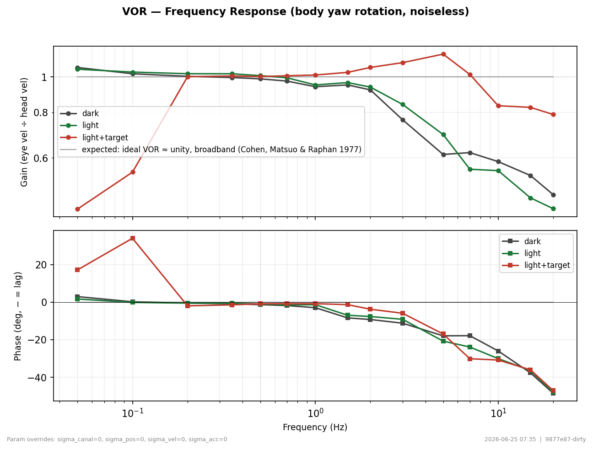
| measure | value | band | golden | drift | |
|---|---|---|---|---|---|
| PASS | VOR peak gain — dark | 1.062 | [0.4, 1.2] [10] | 1.062 | +0.0% |
| PASS | VOR high-side −3 dB cutoff — dark | 3.13 Hz | — | 3.13 | +0.0% |
| PASS | VOR peak gain — light | 1.05 | [0.4, 1.2] [10] | 1.05 | +0.0% |
| PASS | VOR high-side −3 dB cutoff — light | 4.236 Hz | — | 4.236 | +0.0% |
| PASS | VOR peak gain — light+target | 1.155 | [0.4, 1.2] [10] | 1.155 | +0.0% |
| PASS | VOR low-side −3 dB corner (canal high-pass) — light+target | 0.1507 Hz | — | 0.1507 | +0.0% |
| PASS | VOR high-side −3 dB cutoff — light+target | 16.06 Hz | — | 16.06 | +0.0% |
OKR — Bode (full-field scene motion)
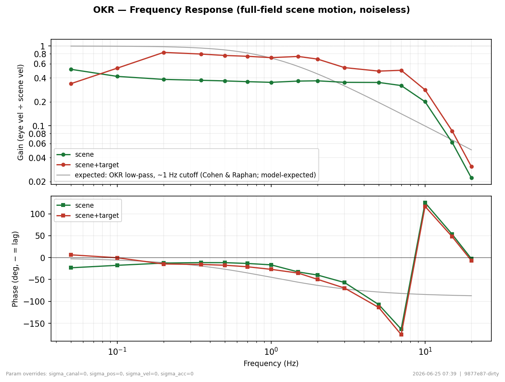
| measure | value | band | golden | drift | |
|---|---|---|---|---|---|
| PASS | OKR peak gain — scene | 0.511 | [0.4, 1.05] [10] | 0.511 | +0.0% |
| PASS | OKR −3 dB bandwidth — scene | 0.5985 Hz | [0.1, +∞] [10] | 0.5985 | +0.0% |
| PASS | OKR peak gain — scene+target | 0.8324 | [0.4, 1.05] [10] | 0.8324 | +0.0% |
| PASS | OKR −3 dB bandwidth — scene+target | 2.606 Hz | [0.1, +∞] [10] | 2.606 | +0.0% |
What this shows
Sinusoidal scene-velocity sweep (0.05–20 Hz, 20 deg/s), NOISELESS. Eye velocity (SPV) ÷ scene velocity for scene-only and scene+target. OKR is low-pass — gain rolls off above ~0.5 Hz; a stationary target suppresses it. Gain ≈ 1 at low f, rolls off above ~0.5 Hz.
📖 [10]
3. Gravity Estimator + T-VOR · 935.5s · 9877e87-dirty.ed37ec6 · 2026-06-25 07:55 ⚠ out of date — code now 9877e87-dirty.48acb6f
Canal-otolith interaction: OCR, OVAR, VOR tilt suppression, OCR vs tilt angle, somatogravic OCR frequency dependence, and translational VOR. These share a path — gravity/tilt and lateral translation both produce linear-acceleration components whose ocular effect is vergence/distance-dependent, so T-VOR lives here. Parameters: tau_grav=1.6666666666666667, K_gd=2.86, g_ocr=1.019 (Laurens & Angelaki 2011).
Ocular Counterroll (OCR)

OCR cascade (3 visual conditions)

What this shows
30.0° roll tilt — OCR cascade across dark / scene-on / scene+target-on conditions, 15 s hold, noiseless. Eye torsion stabilises at ≈-4.97° in all conditions. SPV row: -VS (dashed) and -canal FT (dotted) should bracket the measured SPV.
OVAR — Off-Vertical Axis Rotation

| measure | value | band | golden | drift | |
|---|---|---|---|---|---|
| FAIL | OVAR SPV modulation amplitude at 10° tilt (∝ sin tilt) | 3.324 deg/s | [0.2, 1.5] [11] | 3.324 | +0.0% |
| PASS | OVAR steady-state average SPV (screw/translation bias) at 10° tilt | -25.05 deg/s | [-35, 0] [11] | -25.05 | +0.0% |
| FAIL | OVAR SPV modulation amplitude at 30° tilt (∝ sin tilt) | 3.523 deg/s | [0.6, 3] [11] | 3.523 | +0.0% |
| PASS | OVAR steady-state average SPV (screw/translation bias) at 30° tilt | -28.77 deg/s | [-40, -5] [11] | -28.77 | +0.0% |
| PASS | OVAR SPV modulation amplitude at 60° tilt (∝ sin tilt) | 2.709 deg/s | [1.2, 4.5] [11] | 2.709 | +0.0% |
| PASS | OVAR steady-state average SPV (screw/translation bias) at 60° tilt | -33.29 deg/s | [-45, -10] [11] | -33.29 | +0.0% |
| PASS | OVAR SPV modulation amplitude at 90° tilt (∝ sin tilt) | 2.436 deg/s | [1.5, 5] [11] | 2.436 | +0.0% |
| PASS | OVAR steady-state average SPV (screw/translation bias) at 90° tilt | -34.81 deg/s | [-50, -12] [11] | -34.81 | +0.0% |
What this shows
60°/s rotation, tilt angles [10.0, 30.0, 60.0, 90.0]°. Replicates Laurens & Angelaki (2011) Fig 5. SPV sinusoidally modulated at rotation period. Modulation amplitude ∝ sin(tilt). g_est oscillates ±G₀ sin(α). A small residual v_lin DC bias along the rotation axis ("screw direction") reflects the perceived sustained linear translation reported by subjects during prolonged OVAR (Denise et al. 1988; Wood 2002).
VOR Tilt Suppression

| measure | value | band | golden | drift | |
|---|---|---|---|---|---|
| PASS | Post-rotatory version-SPV decay TC at 0° post-stop tilt | 34.16 s | [18, 45] [11] | 34.16 | +0.0% |
| PASS | Post-rotatory version-SPV decay TC at 30° post-stop tilt | 15.35 s | [8, 22] [11] | 15.35 | +0.0% |
| PASS | Post-rotatory version-SPV decay TC at 60° post-stop tilt | 10.05 s | [4, 15] [11] | 10.05 | +0.0% |
| PASS | Post-rotatory version-SPV decay TC at 90° post-stop tilt | 8.985 s | [3, 12] [11] | 8.985 | +0.0% |
| PASS | Sustained late post-rotatory SPV at 60° — reversal / opposite-direction nystagmus | 1.226 deg/s | [-3, 3] | 1.226 | +0.0% |
| PASS | Sustained late post-rotatory SPV at 90° — reversal / opposite-direction nystagmus | -0.03563 deg/s | [-3, 3] | -0.03563 | +0.0% |
What this shows
Upright 60°/s yaw; tilt [0.0, 30.0, 60.0, 90.0]° applied after stop. Replicates Laurens & Angelaki (2011) Fig 6. Per-rotatory identical. TC decreases with post-stop tilt. 0°: TC ≈ τ_vs. 90°: TC ≈ τ_canal.
📖 [11]
Somatogravic OCR — Frequency Dependence

T-VOR cascade — sway / heave / surge × LIT (scene only) / DARK
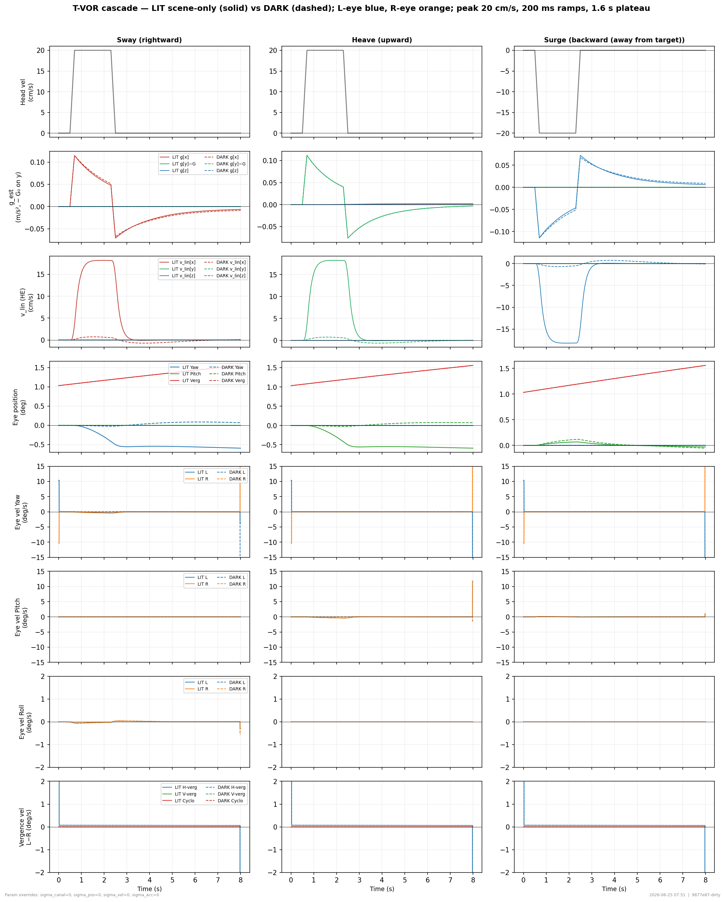
What this shows
Trapezoid head velocity (peak 20 cm/s, 200 ms ramps, 1.6 s plateau) along x (sway), y (heave), z (surge); target at 40 cm. Rows: stimulus, g_est, v_lin, eye position, eye SPV. Sway → eye yaw counter-rotates (cross product); Heave → eye pitch counter-rotates; Surge → vergence rate (dot product · IPD/D²) drives vergence change. g_est should remain ≈ [0, 9.81, 0]. SPV in DARK measures pure vestibular T-VOR; LIT scene-only adds OKR / visual heading contribution.
T-VOR — Lateral Bode (primary gain + torsion cross-effect)
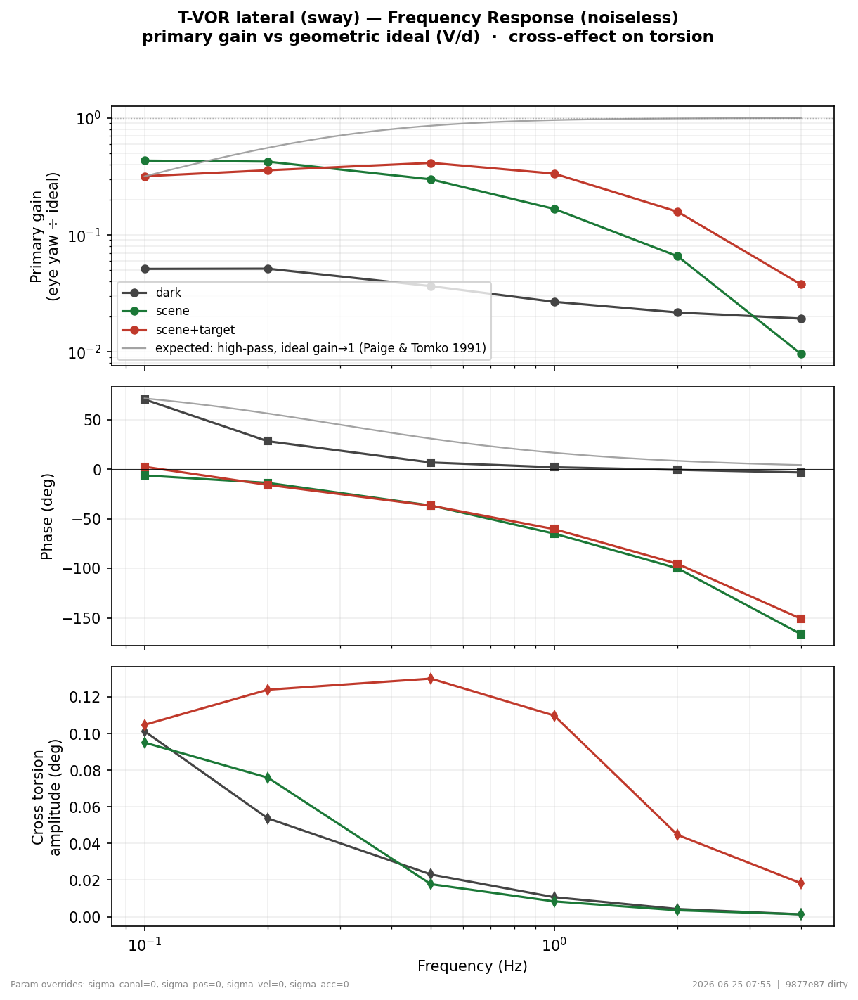
| measure | value | band | golden | drift | |
|---|---|---|---|---|---|
| FAIL | tVOR peak gain vs geometric ideal (high-f plateau) — dark | 0.05131 | [0.3, 1.4] [16, 17] | 0.05131 | +0.0% |
| PASS | Cross-axis torsion amplitude at 1 Hz during lateral translation — dark | 0.01066 deg | [−∞, 1.5] | 0.01066 | +0.0% |
| PASS | tVOR peak gain vs geometric ideal (high-f plateau) — scene | 0.4315 | [0.3, 1.4] [16, 17] | 0.4315 | +0.0% |
| PASS | Cross-axis torsion amplitude at 1 Hz during lateral translation — scene | 0.008362 deg | [−∞, 1.5] | 0.008362 | +0.0% |
| PASS | tVOR peak gain vs geometric ideal (high-f plateau) — scene+target | 0.4125 | [0.3, 1.4] [16, 17] | 0.4125 | +0.0% |
| PASS | Cross-axis torsion amplitude at 1 Hz during lateral translation — scene+target | 0.1099 deg | [−∞, 1.5] | 0.1099 | +0.0% |
What this shows
Sinusoidal interaural translation (20 cm/s, 0.1–4 Hz), NOISELESS, target at 40 cm. Top: horizontal eye-velocity gain vs the geometric ideal (V/d); middle: phase; bottom: cross-axis torsion (somatogravic / OCR coupling). tVOR is high-pass — gain rises toward 1 at high frequency (otolith tilt/translation disambiguation). Cross torsion rolls off with frequency (somatogravic low-pass).
4. Smooth Pursuit · 260.4s · 9877e87-dirty.ed37ec6 · 2026-06-25 07:59 ⚠ out of date — code now 9877e87-dirty.48acb6f
Smooth pursuit and catch-up saccades. Tests velocity gain at multiple speeds, sinusoidal tracking, and the pursuit integrator + saccade interaction cascade. Pursuit input = K_pursuit_direct·(saccadically-gated retinal slip) + K_cereb_pu·(cerebellar EC correction); the closed-loop pursuit memory τ_eff ≈ 1.45 s (Smith predictor) despite the long pop-leak τ_pursuit = 40 s.
Smooth Pursuit — Velocity Range

| measure | value | band | golden | drift | |
|---|---|---|---|---|---|
| PASS | Steady-state pursuit gain (SPV ÷ target vel) at 5 deg/s ramp | 0.9856 | [0.8, 1.1] [18] | 0.9856 | +0.0% |
| PASS | Steady-state pursuit gain at 10 deg/s ramp | 0.9766 | [0.8, 1.1] [18] | 0.9766 | +0.0% |
| PASS | Pursuit onset latency at 10 deg/s (ramp onset → SPV > 2 deg/s) | 77 ms | [60, 180] [19, 20] | 77 | +0.0% |
What this shows
Step-ramp target at 5, 10, 20, 40 deg/s. Blue: smooth pursuit enabled. Gray: saccades only (pursuit off). Rows: position, velocity, pursuit drive (total + integrator + phasic). At 5–10 deg/s: pursuit tracks closely, steady-state gain > 0.8. At higher velocities: catch-up saccades + partial pursuit.
Smooth Pursuit — Bode (frequency response)
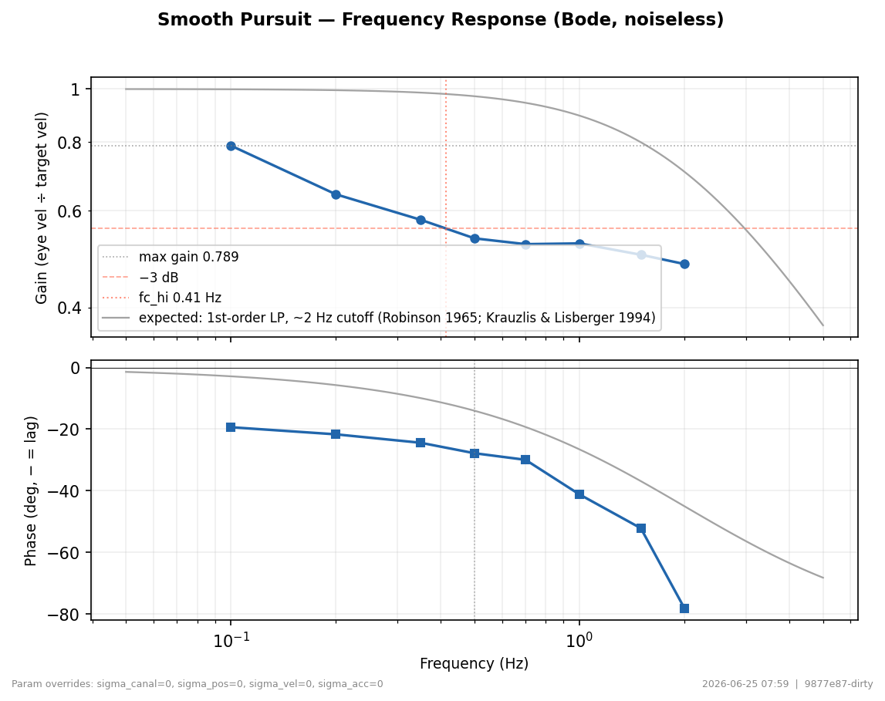
| measure | value | band | golden | drift | |
|---|---|---|---|---|---|
| PASS | Pursuit peak gain | 0.7887 | [0.7, 1.1] [21] | 0.7887 | +0.0% |
| PASS | Pursuit −3 dB bandwidth (Hz) | 0.4139 Hz | [0.3, +∞] [21] | 0.4139 | +0.0% |
What this shows
Sinusoidal target-velocity sweep (0.1–2 Hz, 10 deg/s peak), NOISELESS. Gain = eye-velocity (SPV) ÷ target-velocity; phase lag vs frequency. Gain ≈ 1 at low f, −3 dB near ~1 Hz; phase lag grows with frequency.
📖 [21]
Smooth Pursuit Signal Cascade (Internal)

What this shows
Full signal chain for 20 deg/s pursuit: target ramps 0.2–2.0 s then holds. Pursuit integrator persists after target stop (τ ≈ 40 s). Rows: position, velocity, pursuit drive (total/integrator/phasic), visual error, saccade accumulator, burst, refractory state. Phasic drive rises fast at onset, decays to 0 at steady state. After target stops at 2 s: phasic reverses (retinal slip now backward), integrator decays slowly — eye coasts then corrects with catch-up saccades. Integrator TC visible as slow drift in x_p post-stop.
📖 [18]
5. Near response (vergence + accommodation) · 405.9s · 9877e87-dirty.ed37ec6 · 2026-06-25 08:06 ⚠ out of date — code now 9877e87-dirty.48acb6f
Merged near-response section. Basic midline vergence (noiseless) — reaches geometric target, version stays conjugate, latency/TC/overshoot. Vergence–saccade interaction (Zee SVBN facilitation). AC/A cross-link. Vergence and accommodation frequency responses (Bode). The vergence cascade is kept as an internal-signals debug figure (no metrics).
Basic midline vergence (symmetric, noiseless)
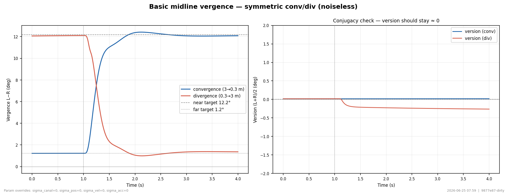
| measure | value | band | golden | drift | |
|---|---|---|---|---|---|
| PASS | Steady-state vergence error vs geometric target (convergence) | 0.1083 deg | [−∞, 1.5] [22] | 0.1083 | +0.0% |
| PASS | Max |version| during symmetric vergence (conjugacy — should be ≈0) | 0.0175 deg | [−∞, 1] [22] | 0.0175 | +0.0% |
| PASS | Vergence latency (step → 10% of change) | 110 ms | [80, 300] [19] | 110 | +0.0% |
| PASS | Vergence rise time constant (exp fit) | 0.228 s | [0.1, 2] [19] | 0.228 | +0.0% |
| PASS | Convergence overshoot fraction (peak − SS)/(SS − start) | 0.03185 | [−∞, 0.5] [23] | 0.03185 | +0.0% |
Accommodation step (monocular, noiseless)
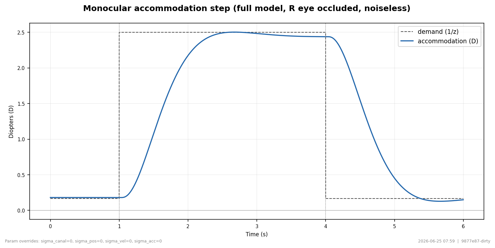
| measure | value | band | golden | drift | |
|---|---|---|---|---|---|
| PASS | Accommodation step latency (demand step → 10% of response) | 248 ms | [150, 500] [24, 25] | 248 | +0.0% |
| PASS | Accommodation rise time constant (exp fit) | 0.5964 s | [0.1, 1.2] [25] | 0.5964 | +0.0% |
| PASS | Accommodation SS gain (response ÷ demand) | 0.9766 | [0.75, 1.05] [24] | 0.9766 | +0.0% |
| PASS | Peak accommodation velocity (far→near step) | 2.875 D/s | [1, +∞] [24] | 2.875 | +0.0% |
What this shows
Far→near→far defocus step (0.17↔2.5 D), MONOCULAR (right eye occluded) so there is no disparity-driven vergence — accommodation isolated physiologically with the AC/A and CA/C cross-links left ON. Latency, time constant, SS gain (lag), peak velocity. Latency ~0.3 s; rise TC ~0.2–0.5 s; SS gain ~0.85–0.95 (lag); exponential.
Vergence Main Sequence (peak velocity vs. amplitude)
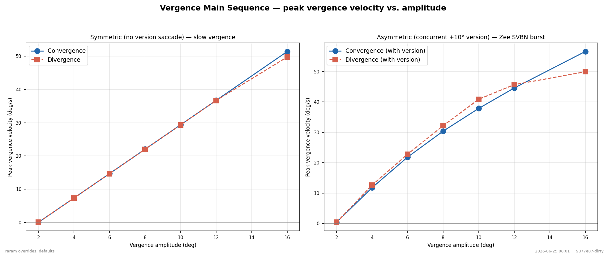
| measure | value | band | golden | drift | |
|---|---|---|---|---|---|
| PASS | Symmetric peak-velocity ratio convergence ÷ divergence (>1 expected) | 1.011 | [1, +∞] [26, 27] | 1.011 | +0.0% |
| PASS | Zee SVBN facilitation: asymmetric ÷ symmetric peak vergence velocity | 1.258 | [1, +∞] [26] | 1.258 | +0.0% |
What this shows
Peak vergence velocity for amplitudes 2–16°, both directions, with and without a concurrent version saccade. Left: symmetric (slow vergence only). Right: asymmetric (Zee SVBN burst active). Symmetric: peak velocity grows roughly linearly with amplitude. Asymmetric: peak velocity 2–3× higher than symmetric (Zee facilitation). Convergence > divergence at every amplitude (asymmetric saturating gain).
AC/A — lens-driven convergence
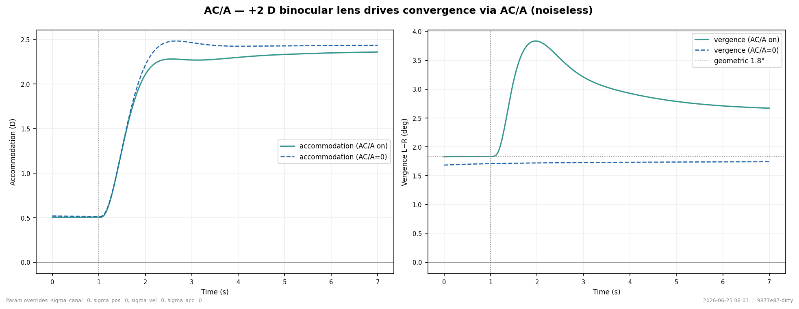
Near-response short-term adaptation
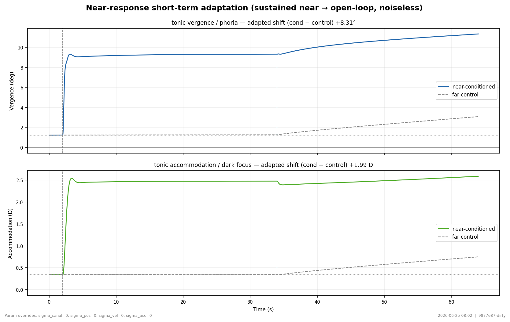
| measure | value | band | golden | drift | |
|---|---|---|---|---|---|
| FAIL | Tonic-vergence (phoria) adaptation after 32 s near (open-loop residual, near-conditioned − far control). Physiological retained phoria ≈ a few Δ (~0.3–3°); current model over-retains (cross-coupled AC/A holds convergence). | 8.313 deg | [0.3, 3] [30, 31] | 8.313 | +0.0% |
| FAIL | Dark-hold persistence TC of the adapted phoria (Hung target ~15–20 s). A railed value (≥~150 s) means vergence does NOT relax in the dark — AC/A keeps converting the still-wound accommodation tonic into convergence. | 200 s | [5, 40] [30] | 200 | +0.0% |
| FAIL | Tonic-accommodation (dark focus) adaptation after 32 s near (open-loop residual, near-conditioned − far control). Physiological near-induced dark-focus shift ≈ 0.1–0.6 D. | 1.987 D | [0.05, 0.8] [30, 31] | 1.987 | +0.0% |
| PASS | Dark-hold persistence TC of the adapted dark focus (Hung target ~15–20 s). | 27.89 s | [5, 40] [30] | 27.89 | +0.0% |
What this shows
32 s sustained near fixation (0.4 m) then open-loop (dark), control-subtracted against a far-throughout run with the identical dark transition. The gap between the two traces is the tonic adaptation induced by the near interval; it holds and decays slowly. Adapted phoria + dark-focus shift toward the near demand (cond − control > 0); open-loop decay TC ~15–20 s (Hung 1992). The control subtraction removes the known dark over-convergence baseline.
Vergence — Bode (frequency response)
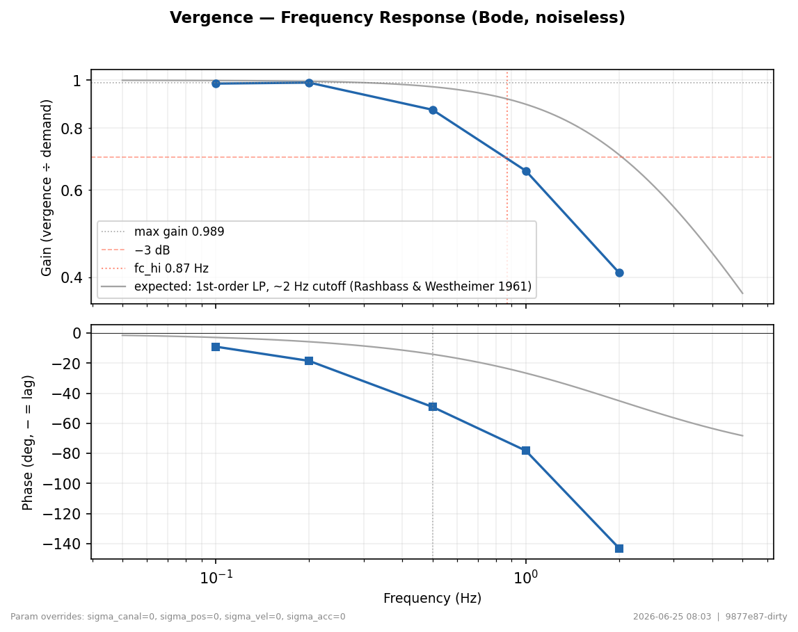
| measure | value | band | golden | drift | |
|---|---|---|---|---|---|
| PASS | Vergence peak gain | 0.9891 | [0.5, 1.1] [19] | 0.9891 | +0.0% |
| PASS | Vergence −3 dB bandwidth (Hz) | 0.8707 Hz | [0.3, +∞] [19] | 0.8707 | +0.0% |
What this shows
Sinusoidal depth/disparity demand (0.1–2 Hz, ±2° about 4°), NOISELESS. Gain = vergence ÷ demand; low-pass, BW ~1–2 Hz. Gain ≈ 1 at low f, −3 dB near ~1 Hz; phase lag grows with frequency.
📖 [19]
Accommodation — Bode (frequency response)
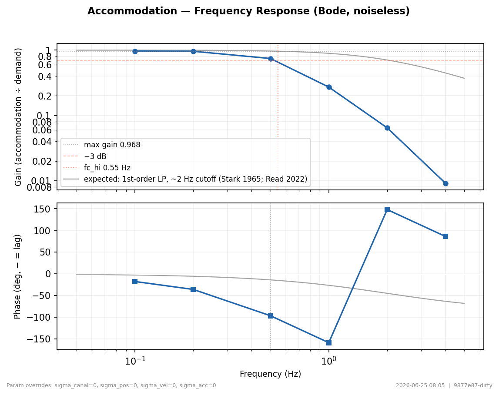
Vergence Cascade (4 conditions)
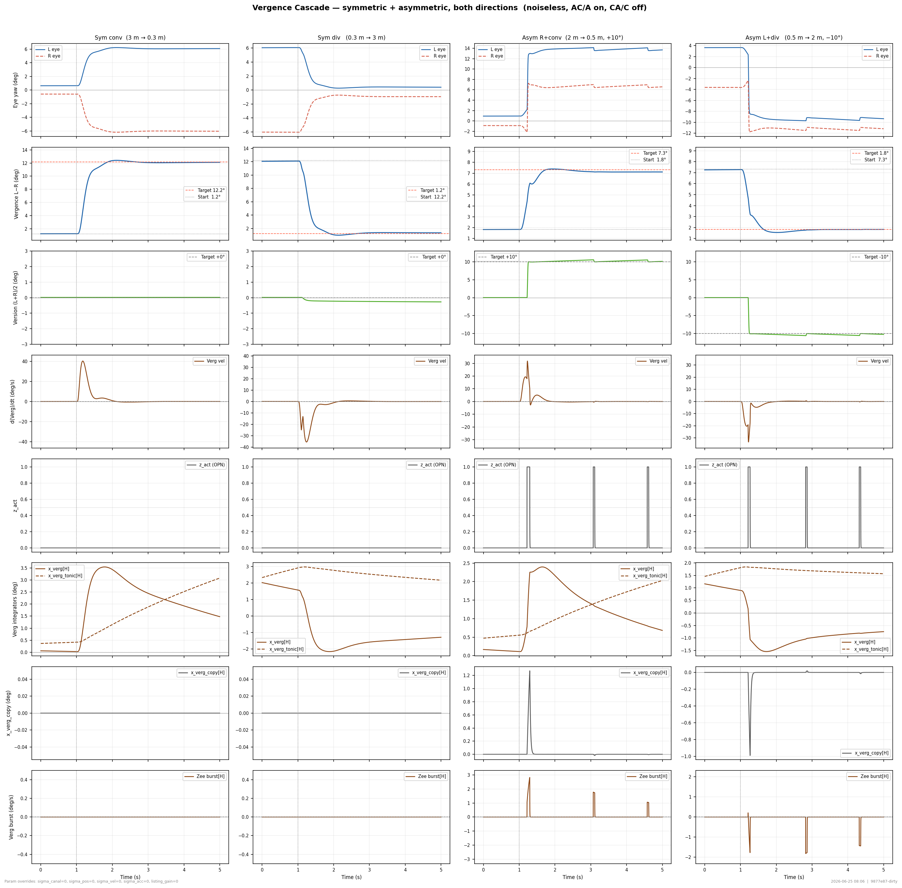
What this shows
8 rows × 4 cols. Cols: sym conv (3→0.3 m), sym div (0.3→3 m), asym R+conv (2→0.5 m, +10°), asym L+div (0.5→2 m, −10°). Rows: eye position, vergence, version, vergence velocity, OPN gate, integrators (x_verg + x_verg_tonic [H]), x_verg_copy, Zee SVBN burst. Symmetric cols: version stays near 0; asymmetric: version follows target. Vergence settles at geometric target. SVBN fires only during saccades.
6. Fixation · 75.8s · 9877e87-dirty.ed37ec6 · 2026-06-25 08:07 ⚠ out of date — code now 9877e87-dirty.48acb6f
Fixational eye movements driven by different noise sources. Tests canal noise filtering, retinal position OU drift (microsaccades), and retinal velocity noise (pursuit-like drift).
Fixational Eye Movements — Noise Source Comparison

| measure | value | band | golden | drift | |
|---|---|---|---|---|---|
| PASS | Eye-position std with all noise off (should be ≈0 — stability sanity) | 0.005168 deg | [−∞, 0.05] | 0.005168 | +0.0% |
| PASS | Fixational drift (eye-position std) with all noise sources on | 0.0983 deg | [0.02, 0.6] [33] | 0.0983 | +0.0% |
| PASS | Microsaccade rate (burst events/s) in the all-noise condition | 0 Hz | [0, 4] [33] | 0 | +0.0% |
What this shows
5-column comparison: noiseless, canal noise only, retinal position OU drift, retinal velocity noise, and all three combined. Rows: eye position, velocity, saccade burst, noise signal. Noiseless: eye stays at 0°. Canal noise: slow drift + rare microsaccades. Pos noise: OU drift → corrective microsaccades when error exceeds threshold. Vel noise: smooth pursuit-like drift.
📖 [33]
7. Listing's Law · 103.5s · 9877e87-dirty.ed37ec6 · 2026-06-25 08:09 ⚠ out of date — code now 9877e87-dirty.48acb6f
Torsional constraint T = OCR − H·V·π/360: saccade plane scatter and OCR-driven correction saccade.
Listing's Plane

OCR Torsional Correction Saccade

| measure | value | band | golden | drift | |
|---|---|---|---|---|---|
| PASS | Residual torsion error after the OCR-correction saccade | 0.1365 deg | [−∞, 1.5] | 0.1365 | — |
Listing's Plane During Smooth Pursuit

| measure | value | band | golden | drift | |
|---|---|---|---|---|---|
| PASS | Listing error RMS during pursuit (torsion vs half-angle demand) | 0.2465 deg | [−∞, 1] [34] | 0.2465 | — |
References
Every acceptance band and figure is anchored to the literature below; in-text numbers link here (full citation on hover).